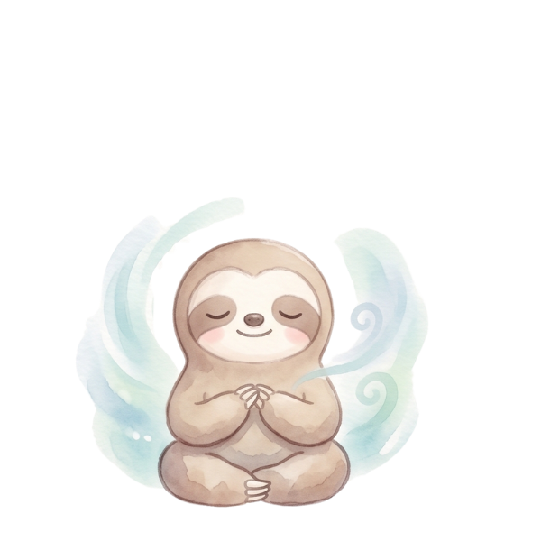

MY SATISFACTION MAP
わたしの満足度マップ
こころのリズムを、やさしく整える。
Loves LifeMINDFULNESS & JOURNALING
STEP 1 最近、満たされた瞬間
最近「これ、選んでよかった」と感じたことを、そっと書き出してみましょう。
買ってよかったもの／使ってよかった時間／行ってよかった場所／食べて幸せだったもの／会えてよかった人／やってよかったこと
最近、心がふっと満たされた瞬間はいつでしたか？
STEP 2 気持ち別に見つける
自分の心が反応するものを、気持ちのままに集めてみましょう。
正解はありません。あなたの「ここちよい」を、ゆっくりと。
正解はありません。あなたの「ここちよい」を、ゆっくりと。
✦ ワクワクするもの・ここちよいもの

モカ＆こころん ｜ わたしの満足度マップ